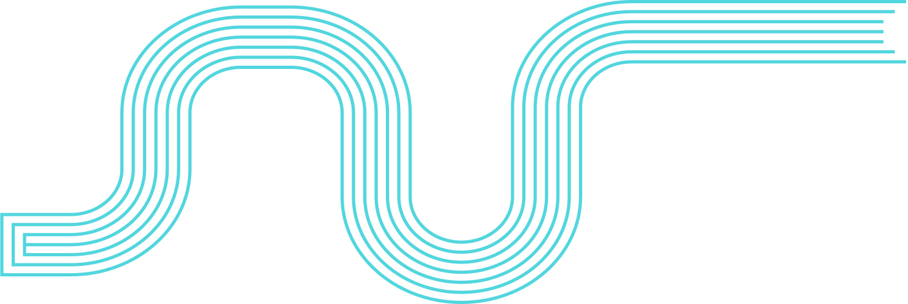

אודות
הוועד המנהל
עמותת עמית לדרך מורכבת ממארג אנושי ייחודי של חברי וחברות ועד מנהל בשילוב עם צוות מקצועי מיוחד במינו. אנו כאן כדי ללוות לאורך כל הדרך!
הוועד המנהל
חברי וחברות הוועד המנהל של העמותה
חגי טופולנסקי
יו"ר הוועד המנהל
חגי טופולנסקי, אלוף במילואים בצה"ל.
קראו עוד
כיהן כראש אגף כוח האדם, וקודם לכן - כמפקד להק האוויר וכראש מטה חיל האוויר. כיום משמש כמנהל תחום המל"טים בחטיבת המודיעין של חברת "אלביט מערכות" ובמקביל, ממשיך לקדם עשייה חברתית בחברה הישראלית.
חגי מונה ליו"ר עמותת "עמית לדרך" בשנת 2018 ומכהן בתפקיד זה עד היום.
נטלי הורוביץ
מייסדת וחברת ועד מנהל
מנכ"לית גלובוס תרגומים, במהלך העשור האחרון נטלי פעלה בעולם היזמות החברתית מתוך האמונה כי שינוי שם יוביל אדוות של שינוי למרחבים נוספים.
קראו עוד
"דור הורינו עמל על היסודות, על הקמת המדינה, עלינו לייצר מדינה שטוב לחיות בה". נטלי נשואה לדובי ואמא של מאיה ושקד.
עמרם מצנע
חבר ועד מנהל
כמי שחרט על דגלו את נושא שוויון הזדמנויות, קידם תחום זה בכל משרה ציבורית בה כיהן: ראש העיר חיפה, חבר כנסת ויו"ר מפלגת העבודה, יו"ר הוועדה הממונה ביישוב ירוחם, ראש המועצה בפועל, וחבר כנסת ויו"ר ועדת החינוך, תרבות וספורט.
קראו עוד
עמרם מצנע היה יו"ר של עמותת "עמית לדרך" בשנים הראשונות להיווסדה. כיום, ממשיך בפעילות החברתית כחבר הנהלה בעמותה, מכהן כיו"ר קרן ירוחם המסייעת בתחומי החינוך, הפיתוח והרווחה בירוחם ויו"ר עמותת מכינת "בארי", ובכך מקדם הלכה למעשה את חזון צמצום הפערים ויצירת עתיד טוב יותר.
עמית מרום
חבר ועד מנהל
דן חלוץ
חבר ועד מנהל
הרמטכ"ל ה-18 של צה"ל (יוני 2005 - פברואר 2007), קודם לכן כיהן כמפקד ה-14 של חיל האוויר הישראלי וסגן הרמטכ"ל.
קראו עוד
דני חלוץ כיהן בהתנדבות כיו"ר עמותת "אתגרים", בין השנים 2008-2013. העמותה מטפלת, באמצעות ספורט אתגרי, באלפי ילדים, בני נוער ובוגרים בעלי מוגבלויות.
רוני דיוה
חבר ועד מנהל
רואה חשבון, המכהן כמנכ"ל המכללה למינהל.
קראו עוד
דיוה הינו ממייסדי עמותת "עמית לדרך" וחבר דירקטוריון וועדת הכספים בעמותה. כמו כן, דיוה ממייסדי "פורום מנהלי המכללות הטכנולוגיות" ושותף בכיר "במטבחון" הפורום.
אורן נחמיה
חבר ועד מנהל
מנהל השירות הלאומי אזרחי במשרד לביטחון פנים.
קראו עוד
יוצא שירות קבע (סא"ל במיל) עם ניסיון עשיר כמנהל משאבי אנוש, מומחיות בתהליכי מיזוג ורה-ארגון, גיוס, מיון, שיבוץ והשמת חיילי איתן (נערי רפול) בחברות ותעשייה מחוץ לצה"ל.
אורלי צדוק
חברת ועד מנהל
פסיכולוגית תעסוקתית מומחית ומדריכה, בעלת כ-30 שנות ניסיון בתחום הייעוץ התעסוקתי.
קראו עוד
בעלת מכון לייעוץ תעסוקתי ותכנון קריירה. מדריכה ב-Joint, חברה במועצת הפסיכולוגים במשרד הבריאות ויועצת הקרנות של הביטוח הלאומי. לשעבר הפסיכולוגית הראשית של שירות התעסוקה.
מרצה באוניברסיטת תל אביב במסגרת קורס עובדי השמה, ובמכללת תל אביב-יפו בתכנית לתואר M.A בפסיכולוגיה תעסוקתית. כתבה את הספר "מלקות לחירות", המביא מבט אישי ומקצועי על ליקויי למידה והפרעת קשב וריכוז.
אירית בן ארי
חברת ועד מנהל
עו״ד אירית בן ארי כיהנה בתפקידים שונים - ניהוליים ומשפטיים, בתעשייה עתירת הידע.
קראו עוד
בין היתר עמדה בראש מערך משאבי אנוש בישראל בחברות יבמ ישראל וקריאו ישראל ובראש מערך משאבי אנוש הגלובאלי בחברות גילת רשתות לווין, אמדוקס ורטליקס. כמו כן כיהנה כמנכ״לית עירייה וכמנכ״לית של חברת תוכנה. הייתה חברה במספר דירקטוריונים.
בעלת תואר ראשון במשפטים מאוניברסיטת ת״א ותואר שני בניהול מאוניברסיטת בן גוריון. כיום בגמלאות ועוסקת בפעילויות התנדבותיות, לימוד ותחביבים אישיים שונים.
יהודית גריסרו
חברת ועד מנהל
גיורא גיל-עד
חבר ועד מנהל
גיורא גיל-עד פרש מצה"ל בשנת 2000 בדרגת סגן אלוף.
קראו עוד
כיום הוא שותף ומנכ"ל בחברת נישה גלובל העוסקת באיתור וגיוס טלנטים לפעילות של חברות בחו"ל. גיורא הוא איש עסקים שמילא בעברו תפקידי ניהול משאבי אנוש בכירים, תפקידי מכירות גלובליים, ובמהלך העשור האחרון היה גם שותף מקים בשני מיזמי הזנק, אחד בתחום חוכמת ההמונים וגיוס איכותי והשני בתחום ניהול חוויית שירות.
גיורא הצטרף לעמית לדרך מתוך אמונה ורצון לתרום למיזם משמעותי וחשוב שמסייע לחיילים להיקלט באופן מיטבי ב"אזרחות" לאחר שחרורם משירות צבאי מלא.
חיים רומנו
חבר ועד מנהל
לשעבר מנכ"ל חברת התעופה "אל על" ופרטנר תקשורת.
קראו עוד
שירת בחיל הים ובתפקידו האחרון היה סגן ראש מספן כוח האדם (רמכ"א). בשנים 1996-1998 היה ראש אגף משאבי אנוש בשירות הביטחון הכללי.
משמש כמנטור למנהלים בכירים במשק, מייעץ ומלווה חברות בשלבים שונים ומרצה בתחומי ניהול, ניהול משברים, יחסי לקוחות ועוד.
אלי שרמייסטר
חבר ועד מנהל
תא"ל במיל אלי שרמייסטר, תושב כפר מונאש, נשוי ואב לארבעה, קצין חינוך ראשי לשעבר, שירת שנים ארוכות בתפקידים בחיל האוויר ובמטה הכללי.
קראו עוד
לאחר שחרורו מצה"ל ניהל את מדעטק, המוזיאון הלאומי למדע טכנולוגיה וחלל. בעל תואר ראשון בפיסיקה, תואר שני בהנדסת תעשייה וניהול, תואר שני נוסף במנהל ציבורי ונוסף במדעי המדינה וביטחון לאומי.
פעיל במגזר הפרטי ומתנדב בכמה עמותות במגזר השלישי.
אלי הילמן
חבר ועד מנהל
מנכ"ל משותף במכון למנהיגות איכותית.
קראו עוד
יזם, יועץ ארגוני ומומחה מנוסה בהנחיית קבוצות מנהיגות, מפקדים בכירים בצה"ל ומנהלים בכירים בארגונים עסקיים.
אלי הוא מייסד החממה ליזמות חברתית סביבתית (HUB-TLV) המהווה חלק מרשת בינלאומית ליזמים. בנוסף, אלי הוא מייסד "החווה החקלאית" המשמשת פלטפורמה להתבוננות ארגונית באמצעות סדנאות שטח.
הכירו את הצוות המקצועי
הצוות שמלווה מדי יום את הצעירים, המנטורים והבוגרים של העמותה.